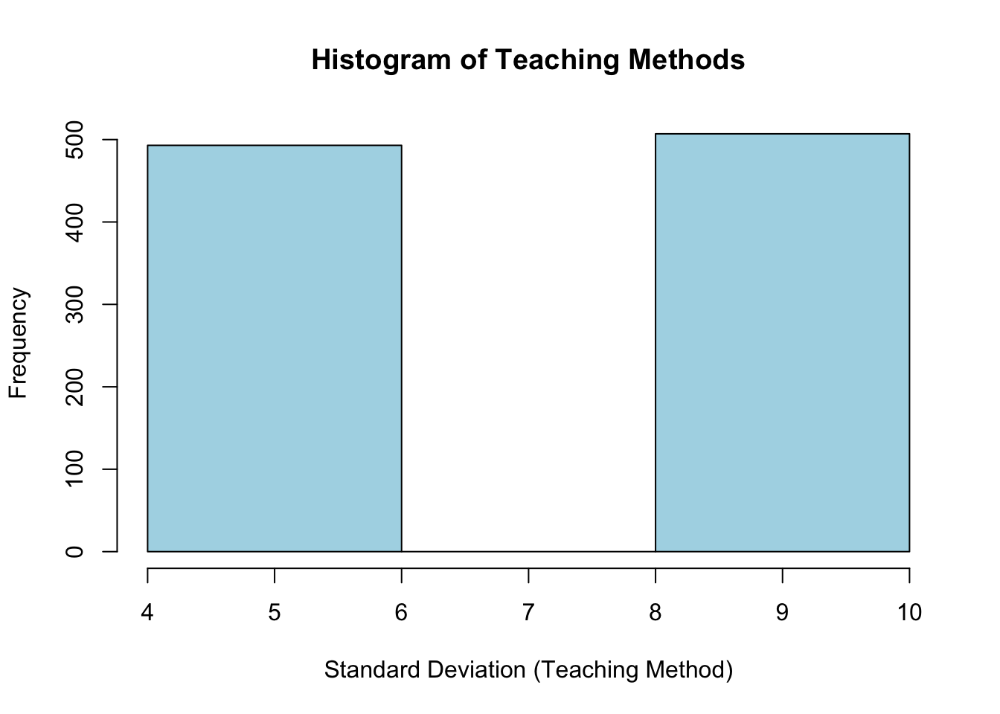
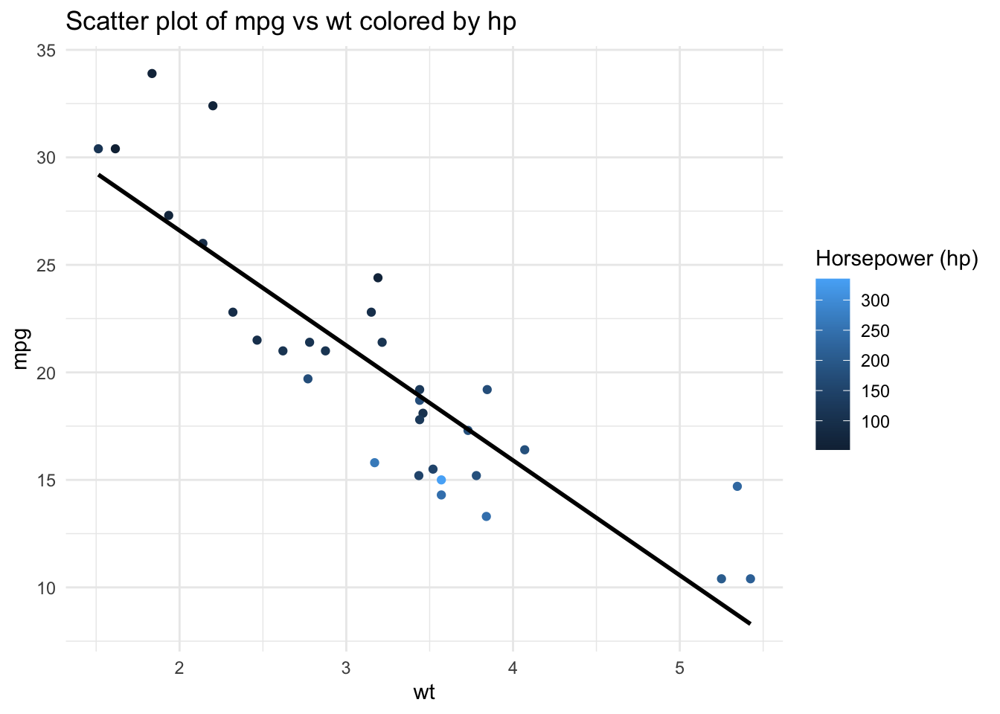

Code
A <- matrix(c(1, 3, 2, 4), nrow=2)
print(A) [,1] [,2]
[1,] 1 2
[2,] 3 4Lifeng Ren
September 7, 2023
Lecture 2 and Lecture 3’s link is now available on GitHub
Lecture 3’s project solution has been updated.
Any Questions? Comments? Suggestions?
Compare with 1:m, m:1, 1:1 in STATA
Data Reshaping
Library and Packages
Data Standardization
Unique Identifier
Basic Data Analysis and Visualization in R
A review project for Day 1 and Day 2
In this lecture, we’ll build on what we’ve already covered by placing it in an economic context. This approach is designed to facilitate a seamless transition into your first-year econometrics class. You may notice that some content in this lecture mirrors or closely resembles previous lessons. This repetition is intentional, aiming to reinforce your understanding and help you consolidate the concepts we’ve explored.
In this class, I won’t directly provide the code. Instead, you’ll be using the Rmd file I’ve supplied to craft your code. We’ll progress to subsequent topics only after everyone has successfully executed their code.
Topics
Mathematical Statistics in R
Intermediate Applied Econometrics (Regression Related) in R
This is something we’ve learned before. So, go ahead and use the rmd file named lec4_stu.Rmd to use R to represent, calculate the following Math Expressions.
Matrix Creation \[ A = \begin{bmatrix} 1 & 2 \\ 3 & 4 \\ \end{bmatrix} \]
Create the matrix in two ways:
matrix(c(), nrow=2)
generate an empty matrix and use a loop to fill in each entry of \(A\)
Matrix Addition Given two matrices \(A\) and \(B\), \[ C = A + B \]
Matrix Multiplication with Scalar
Given scalar \(k\) and matrix \(A\), \[ D = k \times A \]
Matrix Dot Product Given matrices \(A\) and \(B\), \[ E = A \cdot B \]
Matrix Transpose Given matrix \(A\), \[ F = A^T \]
Determinant and Inverse Given matrix \(A\), \[ \text{det}(A) \]
Given matrix \(A\) (and assuming it’s invertible), \[ G = A^{-1} \]
Eigenvalues and Eigenvectors
Given matrix \(A\), Eigenvalues (\(\lambda\)) and Eigenvectors (\(v\)) satisfy: \[ A v = \lambda v \]
Double Sum with Indexing Let’s consider two matrices, \(A\) and \(B\), and calculate the double sum:
\[ \sum_i \sum_j A_{ij} + B_{ij} \]
\(\sum_i\) is iterating through rows, \(\sum_j\) is iterating columns. Suppose: \[ A = \begin{bmatrix} 1 & 2 \\ 3 & 4 \\ \end{bmatrix} \quad , \quad B = \begin{bmatrix} 5 & 6 \\ 7 & 8 \\ \end{bmatrix} \]
Note: 1)You should get a single value. 2)Do it in a customized function named as double_sum.
Matrix Creation
matrix()To do this, we first create an empty 2x2 matrix and then use nested loops to assign values to its entries.
[,1] [,2]
[1,] 1 2
[2,] 3 4Both methods will yield the same matrix \(A\).
Matrix Addition
Matrix Multiplication with Scalar
Matrix Dot Product
Matrix Transpose
Determinants and Inverse
[1] -2 [,1] [,2]
[1,] -2.0 1.0
[2,] 1.5 -0.5Eigenvalues and Eigenvectors
[1] 5.3722813 -0.3722813 [,1] [,2]
[1,] -0.4159736 -0.8245648
[2,] -0.9093767 0.5657675Double Sums
double_sum <- function(matrix1, matrix2) {
# Initialize result
result <- 0
# Double loop to sum elements
for (i in 1:nrow(matrix1)) {
for (j in 1:ncol(matrix1)) {
result <- result + matrix1[i, j] + matrix2[i, j]
}
}
return(result)
}
# Sample matrices
A <- matrix(c(1, 2, 3, 4), nrow=2)
B <- matrix(c(5, 6, 7, 8), nrow=2)
# Use the function to compute the double sum
double_sum(A, B)[1] 36In R, the sample() function allows us to generate random samples. Imagine we have an urn containing 12 distinct colored balls. If we were to draw a ball 10 times, replacing the ball after each draw, we can simulate this process to create a sample.
Since it is randomly generating the sample for us, how can we keep track on it?
Use the set.seed() function.
[1] "Green" "Green" "White" "Blue" "Orange" "Gray" "Purple" "Yellow"
[9] "Orange" "Black" To calculate the probability of drawing any single color from the urn when drawing one ball (without replacement), you can use basic probability principles.
Given that there are 12 distinct colored balls in the urn, the probability \(P\) of drawing any one specific color (let’s say “Red”) in one draw is:
\[ P(\text{Red}) = \frac{\text{Number of Red balls}}{\text{Total number of balls}} \]
If each color appears only once in the urn, then:
\[ P(\text{Red}) = \frac{1}{12} \]
This is true for any individual color in the urn, assuming each color is unique and there’s only one ball of each color.
To calculate this in R:
[1] 0.08333333This will give you the probability of drawing any single specific color from the urn in one draw.
The rep() function in R stands for “replicate.” It is used to replicate the values of vectors or lists.
Here’s a brief explanation of its functionality:
rep():This creates a vector with the number 5 repeated three times.
This replicates the entire vector 1:3 two times.
each argument, you can specify how many times each element should be replicated:This replicates each element of the vector 1:3 two times.
times and each: You can also combine both times and each for more complex patterns:Here, each element of the vector 1:2 is replicated three times, and then the entire pattern is replicated twice.
In the context of the urn example, rep() was used to represent the contents of the urn by replicating specific colors according to their quantities. For instance, if the urn had 3 Red balls, 2 Blue balls, and 1 Green ball, we would use rep() to create a vector representing this distribution:
This would produce a vector: Red Red Red Blue Blue Green.
In many cases, you will see \(X \sim (,)\), which is typically used to denote that random variable \(X\) follows a certain distribution.
To describe a discrete random variable and its distribution, you specify: 1. The set of possible values it can take. 2. The probability associated with each value.
Let’s illustrate this with two common discrete probability distributions: the Bernoulli distribution and the Binomial distribution.
A Bernoulli random variable \(X\) can take on two values, usually 0 and 1, with probabilities \(p\) and \(1-p\), respectively. This distribution describes a single experiment with two outcomes, often termed “success” and “failure”.
Notation: \(X \sim \text{Bernoulli}(p)\)
A Binomial random variable \(X\) represents the number of successes in \(n\) Bernoulli trials. Each trial is independent, and the probability of success remains constant across trials.
Notation: \(X \sim \text{Binomial}(n, p)\)
In R, you can work with these distributions using functions like dbinom(), pbinom(), qbinom(), and rbinom() for the Binomial distribution, and similar functions for other distributions. For example,
Generating a binomial random variable with \(n = 5\) and \(p = 0.5\):
Unlike discrete random variables, which take on a finite or countably infinite number of distinct values, continuous random variables can take on an uncountably infinite number of possible values. This means they can take on any value within a specified range.
For a continuous random variable, you specify: 1. The set of possible values it can take, which is usually an interval or union of intervals on the real line. 2. The probability density function (pdf) which provides the likelihood of the variable lying within a particular range.
Let’s illustrate this with two common continuous probability distributions: the Uniform distribution and the Normal distribution.
A continuous random variable \(X\) that is uniformly distributed takes on values within a specified range \([a, b]\) with equal probability.
Notation: \(X \sim U(a, b)\)
Probability Density Function (pdf): \[ f(x) = \begin{cases} \frac{1}{b-a} & \text{for } a \leq x \leq b \\ 0 & \text{otherwise} \end{cases} \]
A normal (or Gaussian) random variable \(X\) has a bell-shaped probability density. It is characterized by two parameters: the mean \(\mu\) and the variance \(\sigma^2\).
Notation: \(X \sim N(\mu, \sigma^2)\)
Probability Density Function (pdf):
\[ f(x) = \frac{1}{\sqrt{2\pi\sigma^2}} \exp \left( -\frac{(x-\mu)^2}{2\sigma^2} \right) \]
In R, you can work with these distributions using functions like dunif(), punif(), qunif(), and runif() for the Uniform distribution, and dnorm(), pnorm(), qnorm(), and rnorm() for the Normal distribution.
Generating a normal random variable with \(\mu = 0\) and \(\sigma^2 = 1\):
Monte Carlo method by approximating the value of \(\pi\) using a simple geometric approach. This is a classic example of Monte Carlo simulation.
Concept:
Imagine a circle inscribed inside a square. The ratio of their areas is \(\frac{\pi r^2}{(2 r)^2}=\frac{\pi}{4}\). If we randomly throw points into the square, the probability that a point lands inside the circle is \(\frac{\pi}{4}\) . Therefore, \(\pi \approx 4 \times\) (number of points inside the circle) / (total number of points thrown).
Steps: 1. Randomly generate points inside the square. 2. Determine how many of those points fall inside the circle. 3. Approximate \(\pi\) using the ratio of points inside the circle to the total points.
runif():set.seed(123) # for reproducibility
# Number of random points
n_points <- 10000
# Counter for points inside the circle
points_inside <- 0
# Loop to generate points and check if they are inside the circle
for (i in 1:n_points) {
# Generate random x and y coordinates using runif()
x <- runif(1, -1, 1)
y <- runif(1, -1, 1)
# Check if point is inside the circle (x^2 + y^2 <= 1)
if (x^2 + y^2 <= 1) {
points_inside <- points_inside + 1
}
}
# Approximate pi
approximated_pi_loop_runif <- 4 * points_inside / n_points
approximated_pi_loop_runif[1] 3.1416In many applications, particularly in simulations or Monte Carlo methods, the parameters of a distribution might not be constants but could be variables themselves. This can be particularly useful when modeling uncertainty in parameters.
Generating Random Variables with Variable Inputs in R
Suppose we’re modeling the scores of students on a test, and we believe the scores are normally distributed around an average of 80. However, we think that the variability (standard deviation) of scores could itself be a random variable, perhaps based on different teaching methods or study materials used.
Let’s say the standard deviation follows a discrete distribution where:
Generate a sample of student scores using rnorm() with this variable input teaching_methods
Hints and Steps:
sd could either be 5 or 10. Then your code should have a vector of c(5,10)teaching_methodsrnorms to generate scores, and in your rnorm() arguments, try two things:
sd = teaching_methodssd = mean(teaching_methods)set.seed(123) # For reproducibility
# Sample the teaching method
teaching_methods <- sample(c(5, 10), size = 1000, replace = TRUE, prob = c(0.5, 0.5))
# Generate scores using the variable standard deviation
scores <- rnorm(1000, mean = 80, sd = teaching_methods)
# Display the first few scores
summary(scores) Min. 1st Qu. Median Mean 3rd Qu. Max.
51.90 75.31 80.21 80.09 84.41 111.84 In this example, each student’s score is generated using a normal distribution with a mean of 80 but a variable standard deviation based on the teaching method. This introduces an additional layer of randomness and complexity, reflecting the real-world scenario where multiple factors can introduce variability.
Just like the results from the Exercise above, once we have a random variable \(X\), we can always find the expected values of it \(E[X]\) and the variance of it \(Var[X]\). How to take those values? For the random variable teaching_methods, we can use mean() and var()

Regression analysis is a powerful statistical method that allows us to examine the relationship between two or more variables of interest. In R, we often use the lm() function for linear regression. However, to dive deeper into the results, especially the coefficients and their standard errors, we need to be familiar with matrix operations and loops.
1. Linear Regression in R
We’ll begin with a simple linear regression using R’s built-in dataset mtcars.
Consider a linear regression model of the mpg (miles per gallon) as a function of wt (weight) and hp (horsepower) using the mtcars dataset.
The mathematical equation representing this linear regression model is:
\[ \text{mpg} = \beta_0 + \beta_1 \times \text{wt} + \beta_2 \times \text{hp} + \epsilon \]
Where: - \(\text{mpg}\) is the dependent variable (miles per gallon). - \(\text{wt}\) is the weight of the car. - \(\text{hp}\) is the horsepower of the car. - \(\beta_0\) is the intercept. - \(\beta_1\) is the coefficient for weight (wt). - \(\beta_2\) is the coefficient for horsepower (hp). - \(\epsilon\) represents the error term, capturing the variability not explained by weight and horsepower.
Task:
model2. Extracting Coefficients and Standard Errors
Once you have your regression model, you might want to extract the coefficients and standard errors for further analysis.
Task:
coefficientsstd_errors3. Matrix Calculations using Loops
Let’s assume you want to multiply each coefficient with its corresponding standard error.
Task:
Use numeric() and length() functions to generate an empty vector called result that has the same length with coefficients.
Using a for loop to multiply each coefficient with its corresponding standard error and save the multiplied result in result
(Optional) Create a function coef_times_se that takes a linear model as input and returns the coefficients multiplied by their standard errors.
4. Advanced Matrix Operations
Compute the dot product of the coefficients and standard errors:
Transpose your coefficients first!
(Optional) Create a function coef_dot_se that takes a linear model as input and returns the dot product of the coefficients and their standard errors.
5. Custom Functions with Loops for Regression Results
Create a function coef_se_square that squares each coefficient and multiplies it by the square of its standard error.
model you saved6. Basic Visualization
wt on the x-axis and mpg on the y-axis.hp (horsepower) to visualize its effect.mpg, wt, and hp.1. Fit Linear Model
Call:
lm(formula = mpg ~ wt + hp, data = mtcars)
Residuals:
Min 1Q Median 3Q Max
-3.941 -1.600 -0.182 1.050 5.854
Coefficients:
Estimate Std. Error t value Pr(>|t|)
(Intercept) 37.22727 1.59879 23.285 < 2e-16 ***
wt -3.87783 0.63273 -6.129 1.12e-06 ***
hp -0.03177 0.00903 -3.519 0.00145 **
---
Signif. codes: 0 '***' 0.001 '**' 0.01 '*' 0.05 '.' 0.1 ' ' 1
Residual standard error: 2.593 on 29 degrees of freedom
Multiple R-squared: 0.8268, Adjusted R-squared: 0.8148
F-statistic: 69.21 on 2 and 29 DF, p-value: 9.109e-122. Extracting Coefficients and Standard Errors
3. Matrix Calculations using Loops
4. Advanced Matrix Operations
5. Custom Functions with Loops for Regression Results
6. Visualization
6.1. & 6.2. Scatter plot with regression line:
`geom_smooth()` using formula = 'y ~ x'
6.3. Descriptive statistics table:
Variable Mean Median Std.Dev
1 mpg 20.09062 19.200 6.0269481
2 wt 3.21725 3.325 0.9784574
3 hp 146.68750 123.000 68.5628685Dr. Qingxiao Li’s notes for R-Review 2020
Rodrigo Franco’s notes for R-Review 2021